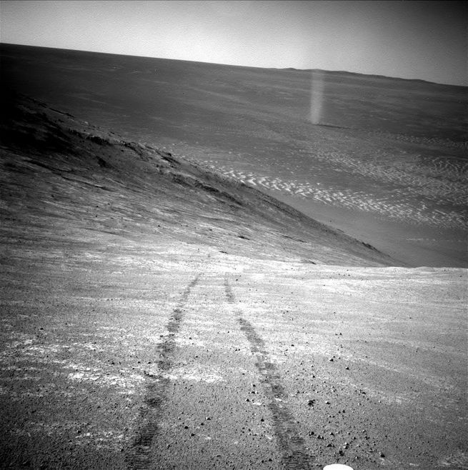

Opportunity Spies A Dust Devil

Taken from the north-facing slope of Knudsen Ridge on March 31, 2016, Opportunity captures a dust devil with its Navcam. While dust devils are quite common the Martian surface, there aren't too many images of them lingering around, especially ones that also feature rover tracks. It's a double whammy of awesome.